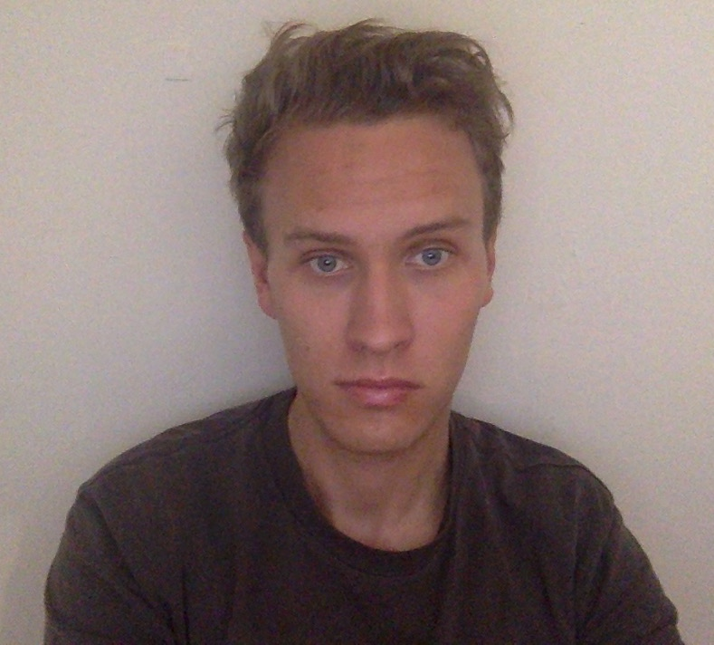

Welcome to My Portfolio

My name is Esben Smith and this page was created to make a log of all the work I will be doing as a web developer. There is nothing up yet, but it will come soon. I am practicing my skills at General Assembly at the moment.